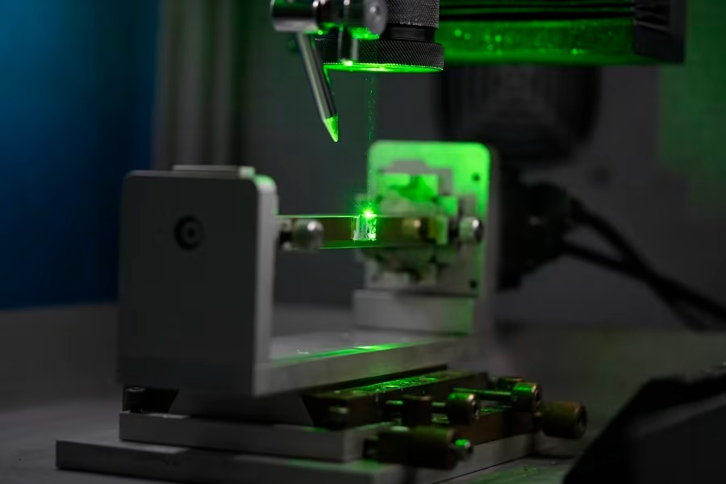
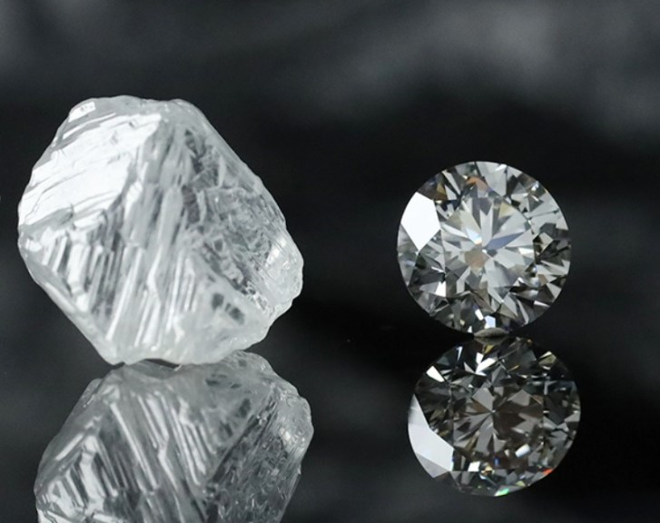

ECO GROW FZC
New Age Diamond Grower
New Age Diamond Grower
Eco Grow FZC, established in 2022, is a leading company specializing in the growth, laser cutting, and polishing of diamonds.
Located in Freezone Phase-2, Fujairah, UAE, our state-of-the-art plant operates 24/7 to meet growing demands. We focus on CVD diamond production,
utilizing advanced machines for growth, automatic laser cutting, and polishing. Committed to innovation and precision, we deliver high-quality diamonds
for both industrial and commercial applications, powered by a dedicated team of over 165 professionals.
ECO GROW produces Lab-Grown Diamonds using the CVD (Chemical vapor deposition) method, where carbon atoms crystallize under controlled plasma conditions that replicate natural diamond formation. These diamonds are chemically, physically, and optically identical to mined ones-crafted with precision, clarity, and minimal environmental impact. As a scientific and sustainable innovation, they offer greater accessibility, and flexibility in shape, size, and color-ushering in the era of new-age diamonds.
We at Eco Grow FZC specialize in fine-quality lab diamonds grown using cutting-edge Chemical Vapor Deposition (CVD) technology. We manufacture products ranging from raw CVD diamond material to accurately-cut components tailored to industrial, technology, as well as jewelry uses. Each and every diamond is crafed with precision for quality, purity, and eco-friendliness. With state-of-the-art growth chambers and computerized processing facilities, we give you uniformity, scalability, and improved performance in every piece. For use in electronics, optics, or adornments, our diamonds are of the highest precision and longevity, fueling industries now and innovations in the future.
- CVD Diamond Plates and Wafers - Ideal for electronics, optics, thermal management, and scientific application, with unprecedented hardness, thermal conductivity, and transparency.
- Precision-Cut Diamonds - Designed for industrial equipment such as cutting, grinding, and drilling with enduring durability compared to traditional materials.
- Gem-Quality Lab-Grown Diamonds - Ethically cultivated diamonds in various shapes, sizes, and clarity levels, perfect for high-end jewelry collections.
- Custom Diamond Solutions - Designed to individual client requirements for specialized uses in semiconductors, quantum computing, and high-end optics.
We specialize in the growth of CVD diamonds using advanced machines for high-quality results.
We offer precise laser cutting and face cutting to deliver flawless diamond shapes for various uses.
Our DLC cutting enhances durability and performance with carbon-based coatings.

Advanced polishing machines give your diamonds brilliant shine and perfect finish.
We test coating thickness, adhesion, and more to meet ASTM A123 and ISO 1461 standards.
Our vision is to be the global leader in CVD diamond manufacturing, recognized for excellence, innovation, and sustainability. We strive to continuously set new industry standards through our state-of-the-art technologies and expertise. By building long-term relationships with our clients and fostering a culture of innovation, we aim to transform the diamond industry and provide cutting-edge solutions for tomorrow's world.
Our vision is to be the global leader in CVD diamond manufacturing, recognized for excellence, innovation, and sustainability. We strive to continuously set new industry standards through our state-of-the-art technologies and expertise. By building long-term relationships with our clients and fostering a culture of innovation, we aim to transform the diamond industry and provide cutting-edge solutions for tomorrow's world.
Address: W.H NO-227, LAND NO-207,
FREEZONE PHASE -2, FUJAIRAH, UAE
Office Phone: +971-096062613
+971-509753142, +971-503506168